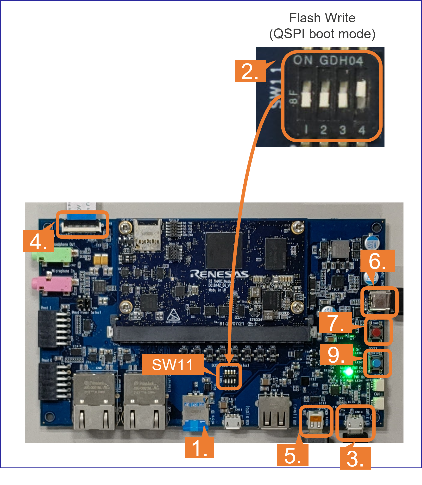
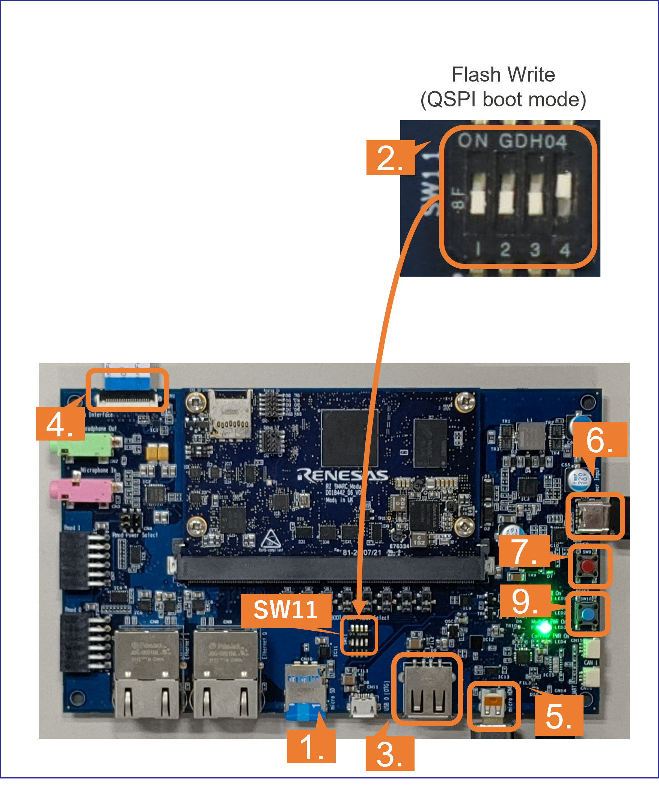

Renesas
RZ/V AI
The best solution for
starting your AI applications.
Provided by Renesas Electronics Corporation
View the Project on GitHub wk-mnA/public_page
This project is maintained by wk-mnA
Hosted on GitHub Pages — Theme by orderedlist
This page explains how to start-up the RZ/V2L AI SDK.
Learn more about the RZ/V series.
Step 1: Obtain an evaluation board
Since MIPI camera module is included, you can start evaluating RZ/V2L immediately by building an environment according to the following procedure.
Get RZ/V2L EVK

Step 2: Obtain necessary equipments
In addition to the RZ/V2L Evaluation Board Kit, please prepare the following equipments.
Note that Serial to MicroUSB Cable and MIPI Camera Module (Google Coral camera) is included in RZ/V2L Evaluation Board Kit.
| Equipment | Details |
|---|---|
| HDMI Monitor | Used to display the graphics |
| AC adapter | Power supply to the board |
| USB Cable Type-C | Connect AC adapter and the board |
| microSD card | Must have over 4GB capacity of blank space. Operating Environment: Transcend USH-I microSD 300S 16GB |
| Linux PC | Used for Setup microSD card and DRP-AI TVM Setup. Note: Docker must be installed. For installation, see [https://docs.docker.com/](https://docs.docker.com/) Operating Environment: Ubuntu 20.04 |
| SD card reader | Used for setting up microSD card |
| PC | Used for the serial communication console Operating Environment : Windows 10 |
| USB Hub | Optional. Used only when booting on HDMI monitor. |
| USB Keyboard | Optional. Used only when booting on HDMI monitor. |
| USB Mouse | Optional. Used only when booting on HDMI monitor. |
Step 3: Obtain RZ/V2L AI SDK
Download the RZ/V2L AI SDK from the link below.
Download Link
Step 4: Extract RZ/V2L AI SDK package
- On your Linux PC, make the working directory.
mkdir -p ai_sdk_work - Register the working directory path to an environment variable.
export WORK=<path to the working directory>/ai_sdk_work - Move to the working directory.
cd ${WORK} - Extract RZ/V2L AI SDK zip file under the working directory.
tar xvzf <Path to the file>/RZV2L_AI_SDK_1st_20230131.tar.gz -C ${WORK} - Check the working directory to confirm the package contents.
ls ${WORK}- If the above command prints followings, the package is extracted correctly.
board_setup ai_sdk_setup document
- If the above command prints followings, the package is extracted correctly.
Step 5: Setup RZ/V2L AI SDK
-
Install Docker on your Linux PC.
- On your Linux PC, move to the working directory.
cd ${WORK}/ai_sdk_setup - Build docker image.
docker build -t rzv2l_ai_sdk_image --build-arg SDK="/opt/poky/3.1.17" --build-arg PRODUCT="V2L" . - Create new directory to be mounted on Docker container.
mkdir ${WORK}/ai_sdk_setup/data - Create docker container.
Here,rzv2l_ai_sdk_containeris a name of docker container, which can be changed by user.docker run -it --name rzv2l_ai_sdk_container -v $(pwd)/data:/drp-ai_tvm/data rzv2l_ai_sdk_imageThe local
$(pwd)/datais mounted to/drp-ai_tvm/dataon the Docker container by the above command option.
For example, you can use this directory to copy files created on the Docker container to your local environment.

- In docker container, run the following command to copy
libtvm_runtime.so, which is the necessary file for the baord, to host machine.
cp /drp-ai_tvm/obj/build_runtime/V2L/libtvm_runtime.so /drp-ai_tvm/data - To exit docker, run following commands.
exit - To start the docker container
rzv2l_ai_sdk_containeragain, run the following command.
docker start -i rzv2l_ai_sdk_container
Now, you are ready to build the AI applications!
Step 6: Build RZ/V2L AI Application
This step explains how to build AI application.
AI Applications are provided in the GitHub repository.
To access the application, please see AI Applications.
Application directory has the following structure.
| Directory | Details |
|---|---|
| exe | Execution environment required when running application on the board. |
| src | Application Source Code. |
| Other directory | Optional: Extra files that may be required other than above. |
| Makefile | Optional: Configuration to build the application. It may be included in the src directory. |
| README.md | Optional: Documentation of the application. |
There are two ways to build the applications.
Note: This step is for users who would like to build the application from the source code.
If you would like to run the application as quickly as possible, you can skip this step since pre-build application binary is provided.
Option 1. Application with instruction.
For application with the chapter called “Application: Build Stage” (or similar) in README.md, please follow the instruction explained in the chapter.
For example, in Object Detection application, follow the instruction in here to generate the following application binary.
- object_detection
Option 2. Application without instruction.
For application without the “Application: Build Stage”, follow the instruction bellow to build application.
- Run (or start) docker container.
For example, run the following command to start the docker container created in Step 5
docker start -i rzv2l_ai_sdk_container - Change the environment variable to use the cross compiler.
source /opt/poky/3.1.14/environment-setup-aarch64-poky-linux - Move to the mounted point in docker container.
cd /drp-ai_tvm/data - Download the application source code.
Here, we use RZV2L_AiLibrary repository Head Counter application as an example.
git clone https://github.com/Ignitarium-Renesas/RZV2L_AiLibrary - Move to the application directory.
Note: The file configuration depends on each application. Please check the file configuration in the repository carefully.
cd RZV2L_AiLibrary/01_Head_count/Head_count_cam - Build the application with
makecommand.make - Check that following application is generated in the
RZV2L_AiLibrary/01_Head_count/Head_count_cam/exe.- head_count_cam_app
- head_count_cam_app
- If you would like to build the other applications in Option 1, please exit and restart the docker container.
Step 7: Setup RZ/V2L Evaluation Board Kit
This section explains how to setup the RZ/V2L Evaluation Board.
1. Install the serial port driver.
Note: Skip to the next step if you have already installed the serial port driver.
The serial communication between Windows PC and RZ/V2L Evaluation Board Kit requires following driver.
https://ftdichip.com/drivers/vcp-drivers/
1.1. Download the software “Virtual COM port (VCP) driver” from the windows version “setup executable” on the download page and extract it.
1.2. Run the *.exe file extracted to install the serial port driver.
1.3. Install the terminal emulator, i.e., Tera Term.
2. Write the bootloaders to the board.
Note: Skip to the next step if you have already written the latest bootloaders to the board.
2.1. Copy following files in ${WORK}/board_setup/bootloaderto your Windows PC.
- Flash_Writer_SCIF_RZV2L_SMARC_PMIC_DDR4_2GB_1PCS.mot
- bl2_bp-smarc-rzv2l_pmic.srec
- fip-smarc-rzv2l_pmic.srec
2.2. Connect PC and Board via Serial to MicroUSB Cable.
2.3. Change SW11 setting (see the figure below).

2.4. Press and hold the power button (SW9) for 1 second to turn on the power.
2.5. On Windows PC, open the terminal emulator.
Here, we use Tera Term as an example.
2.6. Select “File” > “New Connection” and select “Serial” port as shown below.

2.7. Open the configuration window from the “Setup”>”Terminal” and change the setting as follows.
| Item | Value |
|---|---|
| New-line | Receive: Auto |
| Transmit: CR |
2.8. Open the configuration window from the “Setup”>”Serial port” and change the setting as follows.
| Item | Value |
|---|---|
| Baud rate | 115200 |
| Data | 8bit |
| Parity | none |
| Stop | 1bit |
| Flow control | none |
| Transmit delay | 0msec/char |
2.9. Press the reset button (SW10) and following message will be displayed on the terminal.
SCIF Download mode
(C) Renesas Electronics Corp.
-- Load Program to System RAM ---------------
please send !
2.10. Open “File” > “Send file…” and send the Flash Writer file (*.mot) as a text.
If following message is displayed, the file transfer suceeded.
Flash writer for RZ/V2 Series V1.02 Nov.15,2021
Product Code : RZ/V2L
>
2.11. Enter XLS2 on the terminal to get following messages.
> XLS2
===== Qspi writing of RZ/G2 Board Command =============
Load Program to Spiflash
Writes to any of SPI address.
Micron : MT25QU512
Program Top Address & Qspi Save Address
===== Please Input Program Top Address ============
Please Input : H'
2.12. Enter 11E00. The log continues.
Please Input : H'11E00
===== Please Input Qspi Save Address ===
Please Input : H'
2.13. Enter 00000. The log continues.
Please Input : H'00000
Work RAM(H'50000000-H'53FFFFFF) Clear....
please send ! ('.' & CR stop load)
2.14. After the “please send!” message, send the bl2_bp-smarc-rzv2l_pmic.srec file as a text from the terminal software.
2.15. In case a message to prompt to clear data like below, please enter y.
SPI Data Clear(H'FF) Check : H'00000000-0000FFFF,Clear OK?(y/n)
2.16. Following log will be displayed.
SAVE SPI-FLASH.......
======= Qspi Save Information =================
SpiFlashMemory Stat Address : H'00000000
SpiFlashMemory End Address : H'00009A80
===========================================================
2.17. Enter XLS2 on the terminal to get following messages.
> XLS2
===== Qspi writing of RZ/G2 Board Command =============
Load Program to Spiflash
Writes to any of SPI address.
Micron : MT25QU512
Program Top Address & Qspi Save Address
===== Please Input Program Top Address ============
Please Input : H'
2.18. Enter 00000. The log continues.
Please Input : H'00000
===== Please Input Qspi Save Address ===
Please Input : H'
2.19. Enter 1D200. The log continues.
Please Input : H'1D200
Work RAM(H'50000000-H'53FFFFFF) Clear....
please send ! ('.' & CR stop load)
2.20. After the “please send!” message, send the fip-smarc-rzv2l_pmic.srec file as a text from the terminal software.
2.21. In case a message to prompt to clear data like below, please enter y.
SPI Data Clear(H'FF) Check : H'00000000-0000FFFF,Clear OK?(y/n)
2.22. Following log will be displayed.
SAVE SPI-FLASH.......
======= Qspi Save Information =================
SpiFlashMemory Stat Address : H'0001D200
SpiFlashMemory End Address : H'000CC73F
===========================================================
2.23. Power-off the board by pressing the power button (SW9) for 2 seconds.
3. Setup the SD card.
Note: Skip to the next step if you have already setup the SD card with the latest Linux kernel, Linux device tree file and root filesystem.
microSD card contains the Linux kernel and root filesystem to boot-up the board.
You can use Linux PC to format the microSD card and expand the kernel and the root filesystem using USB card reader or other equipment.
Following three files are necessary, which are placed on each partitions on microSD card.
They are in the ${WORK}/board_setup directory.
| File | Description | microSD card partition |
|---|---|---|
| Image-smarc-rzv2l.bin | Linux kernel image (The boot program) |
Partition 1 |
| Image-r9a07g054l2-smarc.dtb | Linux device tree file (The configuration file for booting) |
Partition 1 |
| core-image-weston-smarc-rzv2l.tar.bz2 | Root filesystem | Partition 2 |
Follow the instruction below to prepare the microSD card.
Note: Here, we use
/dev/sdbas microSD card device name.
- Create the following partitions on microSD card according to Create SD card.
Partition Number Size Format 1 500MB (minimum 128MB) FAT32 2 All remaining Ext4 - Insert the microSD card to Linux PC.
- Check if the two partitions are created successfully by running
dfcommand.
Note: Device name of microSD card,
/dev/sdb, may differ depending on your environment.df -h Filesystem Size Used Avail Use % Mounted on … … … … … … /dev/sdb1 … … … … … /dev/sdb2 … … … … … - Run the following commands to setup the partition 1.
Note: Change
/dev/sdb, to your microSD card device name.sudo mkdir -p /mnt/sd sudo mount /dev/sdb1 /mnt/sd sudo cp $WORK/board_setup/Image-smarc-rzv2l.bin /mnt/sd sudo cp $WORK/board_setup/Image-r9a07g054l2-smarc.dtb /mnt/sd sync sudo umount /mnt/sd - Run the following commands to setup the partition 2, which is the root filesystem of the board.
Note: Change
/dev/sdb, to your microSD card device name.sudo mount /dev/sdb2 /mnt/sd sudo tar xfj $WORK/board_setup/core-image-weston-smarc-rzv2l.tar.bz2 -C /mnt/sd sudo cp $WORK/ai_sdk_setup/data/libtvm_runtime.so /mnt/sd/usr/lib64 sync sudo umount /mnt/sd - Eject the microSD card by running the following command and remove the microSD card from Linux PC.
sudo eject /dev/sdb
Step 8: Deploy the application to the Board
This section explains how to copy the application binary to the board.
Users are expected to have finished the instructions in Setup the SD card.
-
Insert the microSD card to Linux PC.
- Run the following command to mount the partition 2, which contains the root filesystem.
Note: Change
/dev/sdb, to your microSD card device name.sudo mount /dev/sdb2 /mnt/sd - Create the application directory on root filesystem.
Note: Directory name
tvmcan be determined by user.sudo mkdir /mnt/sd/home/root/tvm -
Copy the necessary files in execution environment.
There are two types of execution environment.
Option 1. Application with instruction.
For application with the chapter called “Application: Deploy Stage” (or similar) in
README.md, please follow the instruction explained in the chapter.For example, in Object Detection application, follow the instruction in here to find files to be copied.
Use the following command to copy the files to root filesystem.
sudo cp $WORK/ai_sdk_setup/data/<Path to target file>/<filename> /mnt/sd/home/root/tvmOption 2. Application without instruction.
For application without the “Application: Deploy Stage”, copy the whole repository to the root filesystem by running the following command.
Here, RZV2L_AiLibrary repository is used as an example.sudo cp $WORK/ai_sdk_setup/data/<Path to repository>/RZV2L_AiLibrary /mnt/sd/home/root/tvm" - Run the following command to sync the data with memory.
sync - Run the following command to umount the partition 2.
sudo umount /mnt/sd - Eject the microSD card by running the following command and remove the microSD card from Linux PC.
Note: Change
/dev/sdb, to your microSD card device name.sudo eject /dev/sdb
Step 9: Boot RZ/V2L Evaluation Board Kit
This section explains how to boot the RZ/V2L Evaluation Board Kit.
There are two types of booting options.
Option 1. Boot with Windows PC
When booting the board for the first time, use this option.
This option uses Windows PC as a serial console.

-
Insert the microSD card to the Board.
-
Change the SW11 setting as shown in the right figure.
-
Connect the Board and PC by the USB Serial to Micro USB cable.
-
Connect the Google Coral camera to the Board.
-
Connect the HDMI monitor to the Board.
-
Connect the power cable to the Board.
- Press power button for 1 second to turn on the board.
Note: When turning off the board, press the power button for 2 seconds.
- Open the terminal emulator, i.e., Tera Term, and connect with COMS port.
Note: When using Tera Term, change the configuration as explained in Write the bootloaders to the board.
- On the terminal emulator, keep pressing ENTER key and press reset button.
Note: This procedure is required only when the bootloader is updated.
- U-boot console will be activated.
- Run the following commands.
env default -a setenv bootargs 'root=/dev/mmcblk1p2 rootwait' setenv bootcmd 'mmc dev 1;fatload mmc 1:1 0x48080000 Image-smarc-rzv2l.bin; fatload mmc 1:1 0x48000000 Image-r9a07g054l2-smarc.dtb; booti 0x48080000 - 0x48000000' saveenv boot
- U-boot console will be activated.
- After the boot-up, the login message will be shown on the console.
smarc-rzv2l login: - Log-in to the system using the information below.
- user:
root - password: none
- user:
Option 2. Boot on HDMI monitor
Users can use this option after they set the U-boot environment variables in Option 1.
This option does not require PC to control the serial console.
The instruction in the application documentation assumes this booting option.

-
Insert the microSD card to the Board.
-
Change the SW11 setting as shown in the right figure.
-
Connect the USB mouse and USB keyboard via USB hub.
-
Connect the Google Coral camera to the Board.
-
Connect the HDMI monitor to the Board.
-
Connect the power cable to the Board.
- Press power button for 1 second to turn on the board.
Note: When turning off the board, press the power button for 2 seconds.
-
After the boot-up, following screen will be displayed on HDMI monitor.

-
Click the icon at the top-left cornder to open the terminal.

Appendix
A1. Create SD card
Follow the instruction below to create the microSD card partitions.
- Before inserting the microSD card to your Linux PC, open the terinal on Linux PC and run the following command to check the devices without microSD card.
lsblk- Following is the example output.
NAME MAJ:MIN RM SIZE RO TYPE MOUNTPOINT sda 8:0 0 30.9G 0 disk ├─sda1 8:1 0 512M 0 part /boot/efi ├─sda2 8:2 0 1K 0 part └─sda5 8:5 0 30.3G 0 part / sr0 11:0 1 1024M 0 rom
- Following is the example output.
- Insert the microSD card to your Linux PC and run the following command again.
lsblk - Check the output and confirm the name of microSD card device name.
In this case, the microSD card device name is/dev/sdb.
Note: Be careful not to use the other device
NAME MAJ:MIN RM SIZE RO TYPE MOUNTPOINT sda 8:0 0 30.9G 0 disk ├─sda1 8:1 0 512M 0 part /boot/efi ├─sda2 8:2 0 1K 0 part └─sda5 8:5 0 30.3G 0 part / sdb 8:16 1 29.7G 0 disk └─sdb1 8:17 1 29.7G 0 part sr0 11:0 1 1024M 0 rom - Run the following command to check the automatically mounted microSD card partitions.
df - Check the output and find the mount point, which is
/media/user/A8D3-393Din the following example.
Filesystem 1K-blocks Used Available Use% Mounted on udev 745652 0 745652 0% /dev : snip : /dev/sdb1 511720 4904 506816 1% /media/user/A8D3-393B - Unmount the automatically mounted partitions.
sudo umount /media/user/A8D3-393B- If there are more than one partitions on microSD card, unmount all partitions.
- If there are more than one partitions on microSD card, unmount all partitions.
- Run
fdiskcommand as shown below to change the partition table according to the following table.
Type/Number Size Filesystem Contents Primary #1 500MB (minimum 128MB) FAT32 Linux kernel
Device treePrimary #2 All remaining Ext4 Root filesystem sudo fdisk /dev/sdb- Following log will be shown.
Welcome to fdisk (util-linux 2.34). Changes will remain in memory only, until you decide to write them. Be careful before using the write command. Command (m for help):- Type
oto console. The log continues.
Created a new DOS disklabel with disk identifier 0x6b6aac6e. Command (m for help):- Type
nto console. The log continues.
Partition type p primary (0 primary, 0 extended, 4 free) e extended (container for logical partitions) Select (default p):- Type
pto console. The log continues.
Partition number (1-4, default 1):- Press ENTER key. The log continues.
First sector (2048-62333951, default 2048):- Press ENTER key. The log continues.
Last sector, +/-sectors or +/-size{K,M,G,T,P} (2048-62333951, default 62333951):- Type
+500Mto console. The log continues.
Created a new partition 1 of type 'Linux' and of size 500 MiB. Partition #1 contains a vfat signature. Do you want to remove the signature? [Y]es/[N]o:- Type
Yto console. The log continues.
The signature will be removed by a write command. Command (m for help):- Type
nto console. The log continues.
Partition type p primary (1 primary, 0 extended, 3 free) e extended (container for logical partitions) Select (default p):- Type
pto console. The log continues.
Partition number (2-4, default 2):- Press ENTER key. The log continues.
First sector (1026048-62333951, default 1026048):- Press ENTER key. The log continues.
Last sector, +/-sectors or +/-size{K,M,G,T,P} (1026048-62333951, default 62333951):- Press ENTER key. The log continues.
Created a new partition 2 of type 'Linux' and of size 29.2 GiB. Command (m for help):- Type
pto console. The log continues.
Disk /dev/sdb: 29.74 GiB, 31914983424 bytes, 62333952 sectors Disk model: Transcend Units: sectors of 1 * 512 = 512 bytes Sector size (logical/physical): 512 bytes / 512 bytes I/O size (minimum/optimal): 512 bytes / 512 bytes Disklabel type: dos Disk identifier: 0x6b6aac6e Device Boot Start End Sectors Size Id Type /dev/sdb1 2048 1026047 1024000 500M 83 Linux /dev/sdb2 1026048 62333951 61307904 29.2G 83 Linux Filesystem/RAID signature on partition 1 will be wiped. Command (m for help):- Type
tto console. The log continues.
Partition number (1,2, default 2):- Type
1to console. The log continues.
Hex code (type L to list all codes):- Type
bto console. The log continues.
Changed type of partition 'Linux' to 'W95 FAT32'. Command (m for help):- Type
wto console. Thefdiskinterface will end.
The partition table has been altered. Syncing disks. - Following log will be shown.
- Check the partition table with the command below.
partprobe sudo fdisk -l /dev/sdb- Output would be as follows.
Disk /dev/sdb: 29.74 GiB, 31914983424 bytes, 62333952 sectors Disk model: Maker name etc. Units: sectors of 1 * 512 = 512 bytes Sector size (logical/physical): 512 bytes / 512 bytes I/O size (minimum/optimal): 512 bytes / 512 bytes Disklabel type: dos Disk identifier: 0x6b6aac6e Device Boot Start End Sectors Size Id Type /dev/sdb1 2048 1026047 1024000 500M b W95 FAT32 /dev/sdb2 1026048 62333951 61307904 29.2G 83 Linux
- Output would be as follows.
- Run the command below to format and mount the partitions 1.
Note: If the partitions were automatically mounted after the step 6, please unmount them again.
sudo mkfs.vfat -v -c -F 32 /dev/sdb1- Following log will be shown.
mkfs.fat 4.1 (2017-01-24) /dev/sdb1 has 64 heads and 32 sectors per track, hidden sectors 0x0800; logical sector size is 512, using 0xf8 media descriptor, with 1024000 sectors; drive number 0x80; filesystem has 2 32-bit FATs and 8 sectors per cluster. FAT size is 1000 sectors, and provides 127746 clusters. There are 32 reserved sectors. Volume ID is a299e6a6, no volume label. Searching for bad blocks 16848... 34256... 51152... 68304... 85072... 10209 6... 119376... 136528... 153552... 170576... 187472... 204624... 221648... 238 928... 256208... 273744... 290768... 308048... 325328... 342480... 359504... 3 76656... 393680... 410576... 427216... 444624... 462032... 479184... 495952...
- Following log will be shown.
- Run the command below to format and mount the partitions 2.
sudo mkfs.ext4 -L rootfs /dev/sdb2- Following log will be shown.
mke2fs 1.45.5 (07-Jan-2020) Creating filesystem with 7663488 4k blocks and 1916928 inodes Filesystem UUID: 63dddb3f-e268-4554-af51-1c6e1928d76c Superblock backups stored on blocks: 32768, 98304, 163840, 229376, 294912, 819200, 884736, 1605632, 2654208, 4096000 Allocating group tables: done Writing inode tables: done Creating journal (32768 blocks): done Writing superblocks and filesystem accounting information: done
- Following log will be shown.
- Eject the microSD card and insert it again to remount the partitions.
Refer to the Setup the SD card to write files to the microSD card.